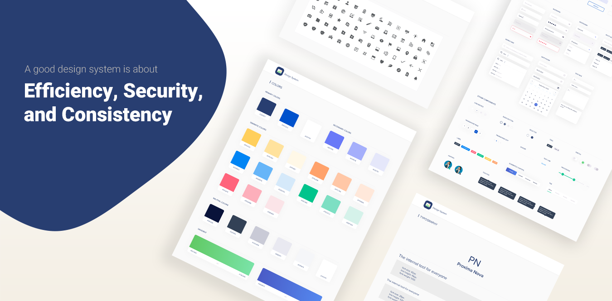
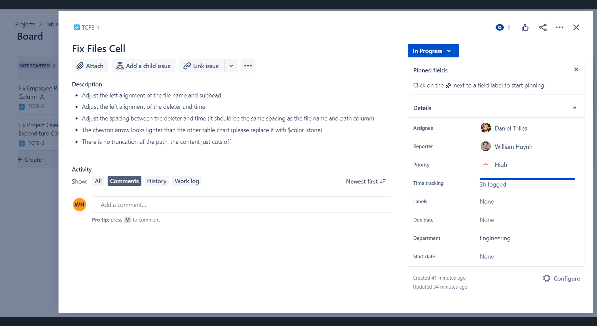
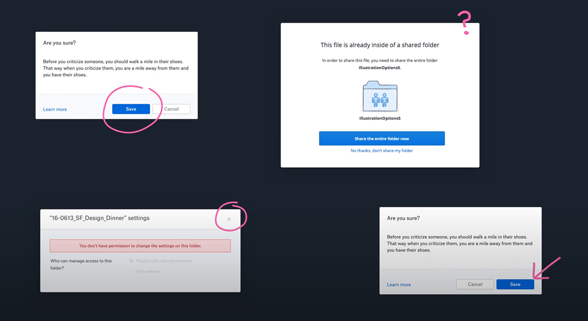
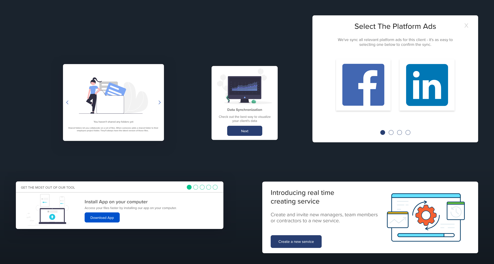
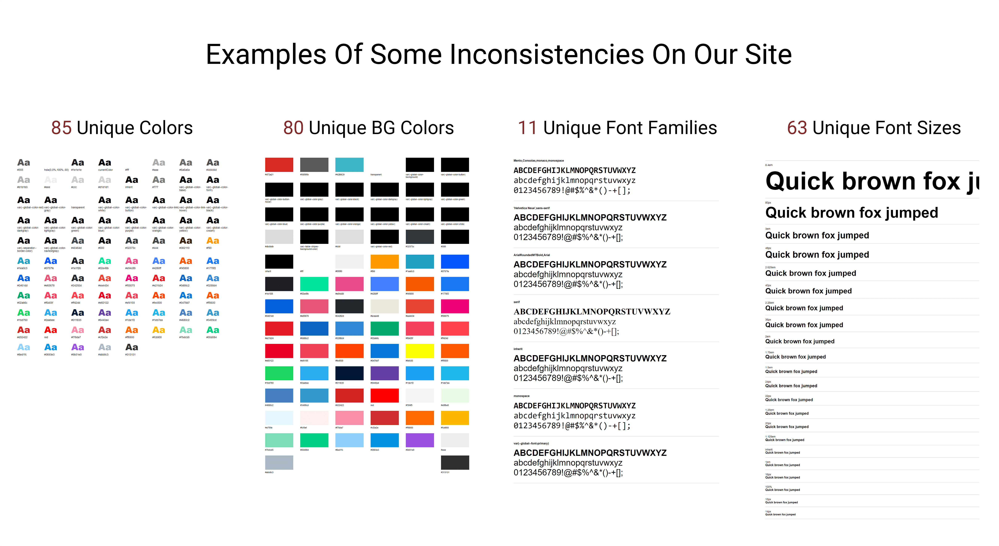
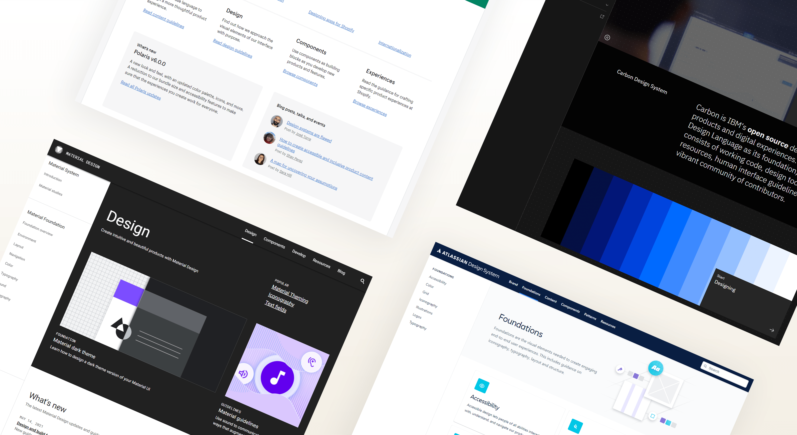
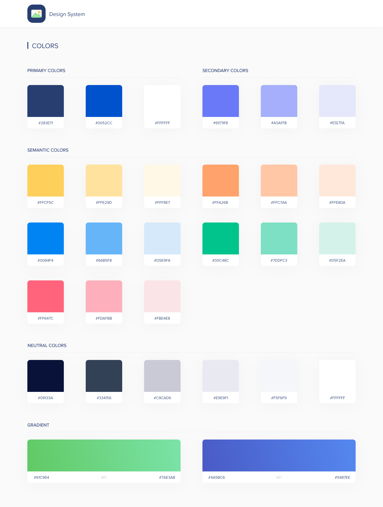
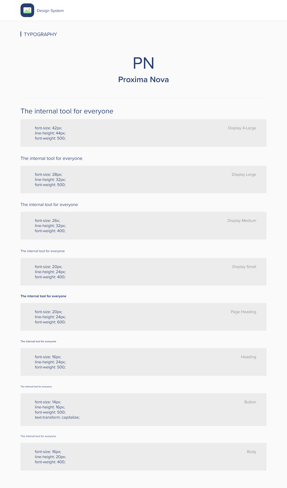
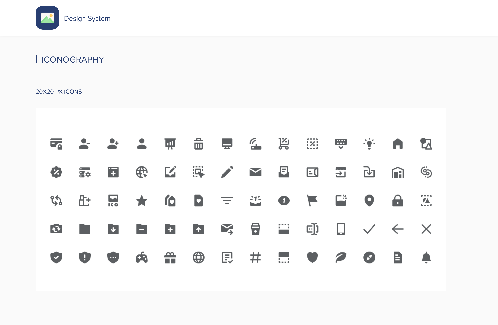
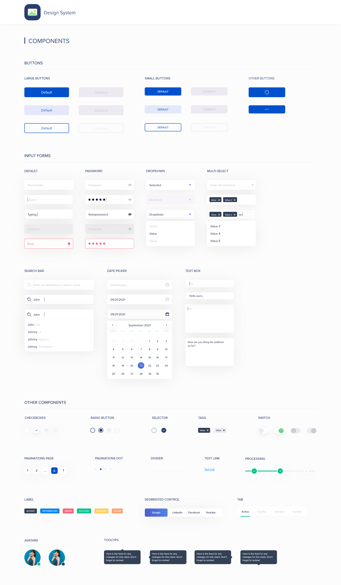

Synopsis
While working as the only designer at Wpromote, I was assigned to work with 1 product manager, and 3 senior engineers to redesign and develop the proprietary platform tool for the organization. This new platform tool consists of some notable features such as:
- Client’s health based on the overall satisfaction from the services we provide
- All‑in‑one visibility for managers to organize and delegate projects among their teams
- Seamless integration of organic and paid media feeds for a variety of social platforms
- Client’s paid social forecasting tool
In tandem, 2 senior engineers and I were tasked with creating a new design system for the internal platform tool. The design system at that time lacked consistency, some sections were outdated, and some components/patterns were left too open to interpretation. Due to privacy reasons, I can’t show the bulk of my work for this project, but I’ll provide insights on the design system approach.

Overview
One of my former employers
Implement an improved design system that would streamline design workflows, create start‑to‑end deliverables quickly, and standardize reusable components, typography, and color treatment.
Assess the current design system, explore other established design systems for references, and combine best practices that fit internal team needs.
A new and improved design system that keeps things clean and organized across the company, aligning teams structurally and speeding up design and development.
1.5 years
Senior UI/UX Designer (leading research, interaction design, visual design, documentation, adoption)
Problem
The current design system was outdated. As a result, the platform tool, some branding aspects, and the teams who used the design system lacked a shared foundation around process, design language, visual guidelines, components, and UI libraries. In short, this created inefficiencies within the product and amongst the teams.
So let's start with casting the villain. Everybody loves a good villain. The Joker, Killmonger, etc. When I say a villain in the case of Design Systems, the villain is a well-framed and well-named problem. And for this case, thankfully, the villains that stand in the way can be solved by Design Systems and fairly understood and clear. There are different words for this but the villains to me the way I put them are inefficiency, insecurity, and inconsistency.
Inefficiency
Inefficiency is ultimately about designing the same things again and again. A button, dropdown, or snackbar gets re‑designed and rebuilt multiple times in different ways, creating an unnecessary stack of variations.
For example, an engineer spent a fairly long time building a table cell, then another week matching CSS properties that were already built elsewhere. Within the platform, there are tons of table cells: employee lists, forecasting budgets, project overview, so this pattern repeated constantly.

Insecurity
When we interviewed designers who worked on the platform, they described a lack of confidence. They didn’t know best practices or whether a pattern was already proven not to work, which created a nagging sense of insecurity.
A modal is a simple example: sometimes it had an ‘X’ close icon, sometimes a cancel button. Sometimes the primary action was on the left, sometimes on the right. Without guidance, it became unobvious what the right approach was.

Inconsistency
Inconsistency makes the interface increasingly unpredictable and chips away at user confidence. Users end up having to learn the same things in different ways again and again.
Below is an example of different onboarding UI patterns, ironic because you’re not only learning different onboarding processes, but also different UI again and again.

Research
Before making changes and removing things from the old design system, research was key. I used tools like CSS Stats to analyze the site’s CSS properties and stylesheets to quantify styling variation prior to changes.
CSS Stats visualization (before changes):

Listing the UI Inventory
The inventory process helped us clearly see discrepancies across the product. We conducted a full 4‑day audit led by 1 designer and 1 engineer. The goal was to identify inconsistencies in design assets and prioritize which components should be reworked or removed, then document the new collective components.
The In‑Between
To ensure success, we aligned stakeholders and everyone directly involved. We promoted the initiative through a company‑wide presentation (goals, current pain points, why we’re doing it) and involved engineers early with weekly to bi‑weekly check‑ins.
Design Exploration
I explored established design systems for references, including Google Material, Atlassian, and Shopify. Key takeaways we wanted to include were:
- Brand guidelines
- UI component/pattern library
- Process documentation
- Component source codes
- Accessibility standards

Review
Forming a strong communication loop
Reviewing work helps teams navigate decisions and align on details like visual design, components, and documentation. For this project, we met weekly for about an hour to discuss direction and progress. We also set up a Slack channel for design systems to share updates, concerns, and requests for feedback, bridging the gap between design and engineering.
Accountability & tracking progress
To maintain visibility, we created a Jira board so designers and engineers could plan, assign, and track progress (Open, In Progress, Done, In Review).
Define & Ideate
Color palette
After the audit exercise, we removed colors that served no purpose. Key principles: colors should have meaning and follow accessibility guidelines. We organized colors into four groups: Primary, Secondary, Semantic, and Neutral. The palette meets WCAG 2.1 contrast ratios.
- Primary colors: used most across the UI and brand
- Secondary colors: complement primaries and help components stand out
- Semantic colors: convey messages and communicate purposefully
- Neutral colors: shades (dark blue to white) used for backgrounds, text, etc.

Typography
Based on CSS Stats, we selected Proxima Nova because it works well across screens and has strong flexibility for product and brand. It’s used in three weights: Regular, Medium, and Bold. To meet AA-level WCAG standards, all text is a minimum of 16px with a 1.5 line height.

Iconography
We found a long list of unused and inconsistent icons during the inventory. After grouping icons into collections, we removed icons that weren’t aligned. We chose the Feather icon library because it’s simple, informative, and fits the design system’s visual language.
When to use
- In primary navigation, page headers, or section titles
- To direct attention to an action a user can take
- In banners/snackbars to emphasize themes like announcements or errors

Components
Components make up the heart of the system: buttons, form fields, date picker, and more. With reusable components, teams can speed up workflows, avoid unnecessary variations, and save time.

Note: the final design system content shown above is a preview of the full system.
Results
Even with a short timeline, we saw strong positive signals after launch. Here are takeaways from a 3‑month analysis using a heatmap and internal tracking:
- 15% increase in average time on page - A/B testing on a core feature suggested users spent more time due to more relevant, structured data.
- 45% increase in positive feedback - We used a 5‑star survey with feedback; results skewed heavily 4–5 stars.
- 35% decrease in development hours - Reusable components reduced the need to build net‑new UI for common patterns.
Reflection
By casting strong villains, it drove urgency and necessity for the design system. Research laid a foundation for how we could move forward. After completing the system for all departments, it felt rewarding knowing it would create positive impact across the company. If time permitted, I would continue to take ownership and partner with engineers to ensure the system remains efficient, secure, and consistent as the product scales.